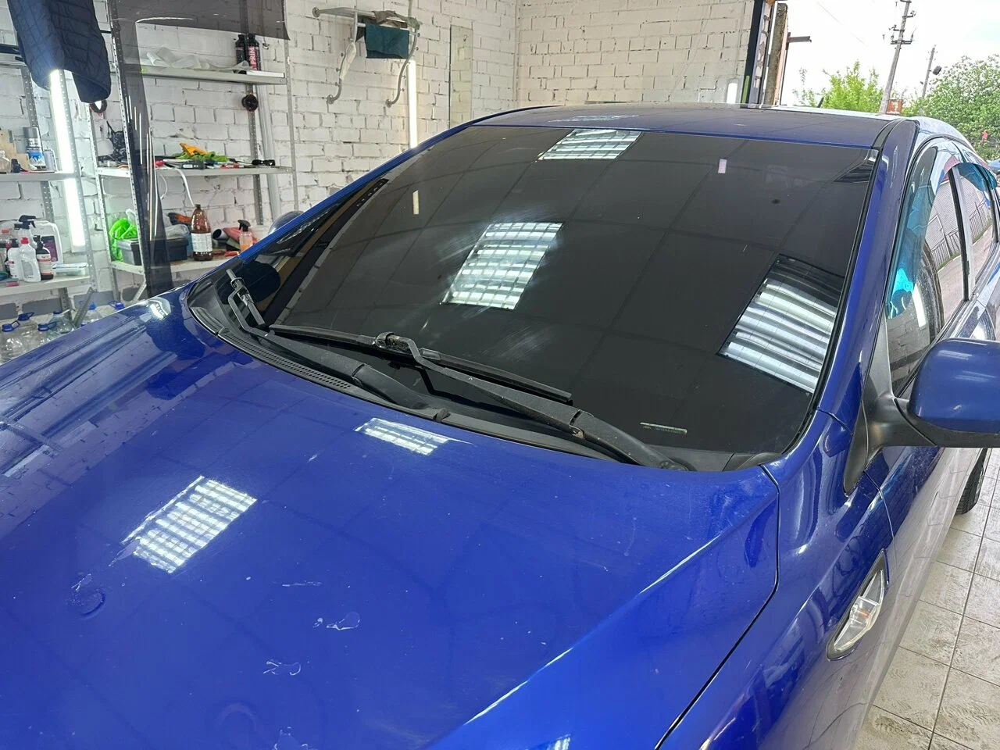
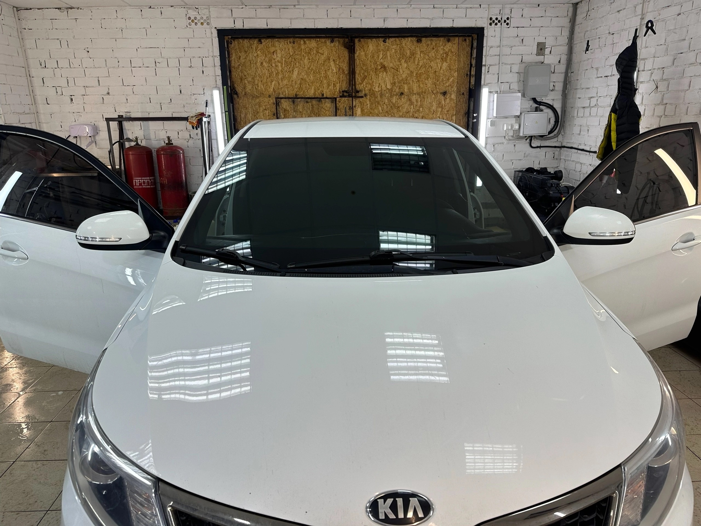
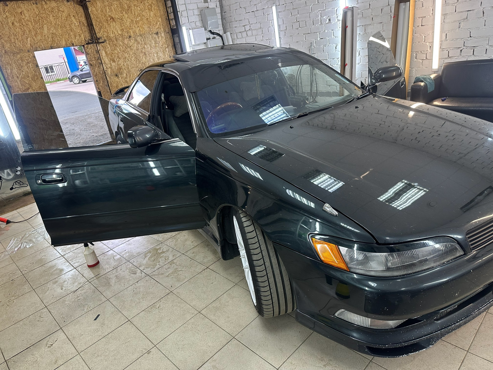
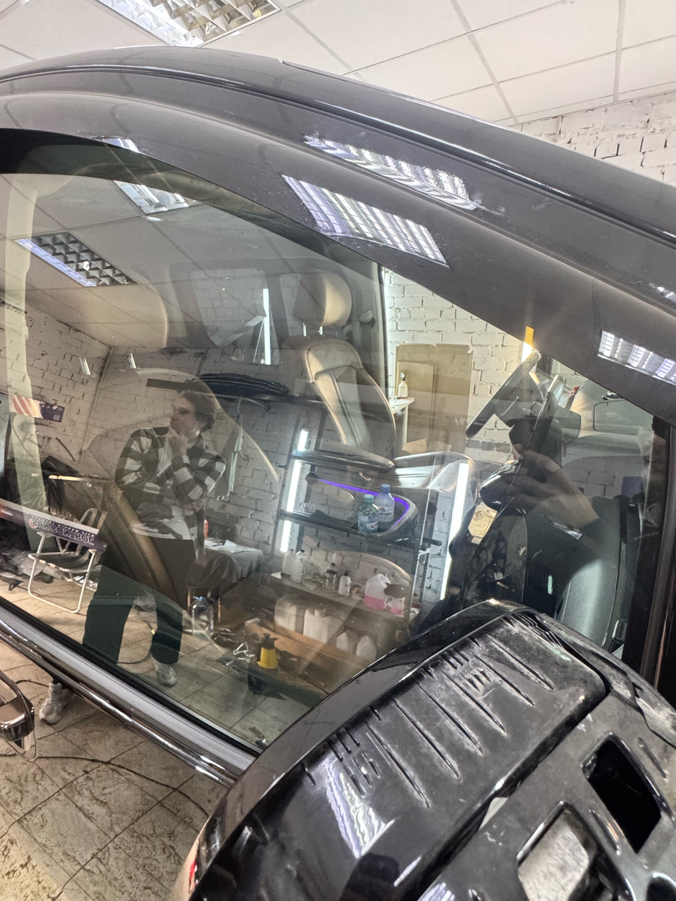
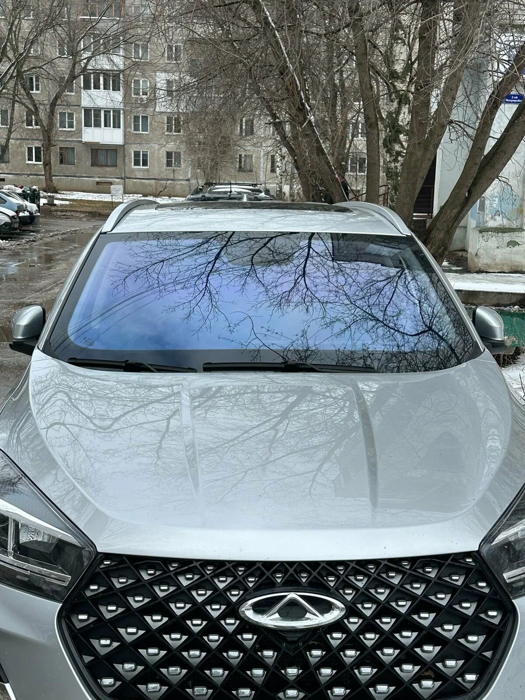

Наши услуги и материалы
Используем только сертифицированные плёнки премиум-сегмента (SunTek, Llumar, Stek, Oracal).
🛡 Антигравийная защита (Полиуретан PPF)
Толщина пленки 190–210 микрон. Защищает кузов от сколов, летящих камней, притёртостей и химии. Имеет гидрофобный слой и эффект самозатягивания царапин при нагреве солнцем или тёплой водой.
🎨 Стайлинг и смена цвета (Винил)
Более 300 оттенков: ультра-глянец, матовый сатин, металлик, хамелеон и текстурный карбон. Преображает внешний вид авто и защищает родной лак от выгорания на солнце.
🕶 Тонирование и бронь стёкол
Атермальная тонировка по ГОСТу, евротонирование (задняя полусфера 5%/15%), а также бронирование лобового стекла пленкой ClearPlex от сколов и трещин.
🕶 Примеры светопропускаемости плёнки (VLT)
Сравнение степени затемненияVLT (Visible Light Transmission) — процент видимого света, пропускаемый плёнкой. Чем ниже показатель, тем темнее стекло снаружи и выше уровень конфиденциальности в салоне.

5%5% Super Dark («В ноль»)
Максимальная приватность. Салон снаружи абсолютно не просматривается. Идеальный выбор для задней полусферы.

15% ХИТ15% Classic Dark
Золотой стандарт детейлинга. Снаружи видны лишь силуэты, при этом сохраняется отличный обзор изнутри даже в сумерках.

35%35% Medium Tint
Умеренное притенение. Смягчает слепящее солнце и предотвращает нагрев салона без ощущения глухого бункера.

50%50% Light Shade
Лёгкое благородное притенение. Снижает утомляемость глаз водителя от яркого дневного света и встречных фар.

70% ГОСТ70% Атермальная (Хамелеон)
Прозрачная плёнка с защитой от жары по ГОСТу. Задерживает до 90% инфракрасного тепла. Разрешена на лобовое и передние стёкла.